전자계산기제어산업기사(구) (2003-08-31 기출문제)
1과목: 프로그래밍일반
1. 프로그램의 오류 수정 작업을 위하여 사용되는 소프트웨어를 무엇이라 하는가?
- linker
- array
- loader
- debugger
(정답률: 알수없음)

2. 프로그래머가 프로그램 내에서 정의하고 이름을 줄 수 있는 자료 객체는?
- 변수
- 정수
- 실수
- 유리수
(정답률: 알수없음)
3. 하나 이상의 유사한 객체들을 묶어서 하나의 공통된 특성을 표현한 객체지향의 요소는?
- 추상화
- 객체
- 메시지
- 클래스
(정답률: 알수없음)
4. C 언어에 대한 설명으로 옳지 않은 것은?
- 구조적 프로그래밍이 가능하다.
- 시스템 소프트웨어를 작성하기에 편리하다.
- 기계어에 해당한다.
- 이식성이 높은 언어이다.
(정답률: 알수없음)
5. 바인딩 시간(Binding time)의 종류에 해당하지 않는 것은?
- 언어구현시간
- 번역시간
- 대기시간
- 언어정의시간
(정답률: 알수없음)
6. BNF 표기법 기호 중 "정의된다"를 의미하는 것은?
- ::=
- |
- < >
- { }
(정답률: 알수없음)
7. 스트림 자료 활용의 예가 많은 언어는?
- SNOBOL 4
- COBOL
- PL/1
- C
(정답률: 알수없음)
8. 시스템 프로그래밍 언어에 가장 적합한 것은?
- pascal
- cobol
- c
- basic
(정답률: 알수없음)
9. C 언어에서 비트 단위 논리 연산자의 종류에 해당되지 않는 것은?
- ∧
- ∼
- &
- ?
(정답률: 알수없음)
10. C 언어에서 사용하는 데이터 유형이 아닌 것은?
- long
- integer
- float
- double
(정답률: 알수없음)
11. COBOL 언어의 PERFORM 문, C 언어의 FOR 문에 해당되는 것은?
- 반복문
- 선택문
- 조건문
- 선언문
(정답률: 알수없음)
12. 운영체제를 기능상 분류했을 때, 처리(processing) 프로그램에 해당하지 않는 것은?
- 감시 프로그램(supervisor program)
- 언어 번역 프로그램(language translator program)
- 문제 프로그램(problem program)
- 서비스 프로그램(service program)
(정답률: 알수없음)
13. 연산기호가 오퍼랜드들 다음에 오는 표기법은?
- Prefix 표기법
- Postfix 표기법
- Infix 표기법
- Outfix 표기법
(정답률: 알수없음)
14. 단항(unary) 연산에 해당하는 것은?
- OR
- AND
- XOR
- NOT
(정답률: 알수없음)
15. C 언어의 기억 클래스 종류가 아닌 것은?
- 자동 변수(automatic)
- 동적 변수(dynamic)
- 레지스터 변수(register)
- 외부 변수(external)
(정답률: 알수없음)
16. C 언어의 연산자 중에서 오른쪽에서 왼쪽으로의 결합법칙을 따르지 않는 것은?
- sizeof
- ＜＜
- !
- ++
(정답률: 알수없음)
17. 고급 언어로 작성된 프로그램을 구문 분석하여 문장의 구조를 트리로 표현한 것으로 루트, 중간, 단말 노드로 구성되는 트리를 무엇이라 하는가?
- 파스트리
- 구문트리
- 중간트리
- 구조트리
(정답률: 알수없음)
18. 구문도표(syntax diagram) 표기시 사용되는 기호가 아닌 것은?
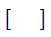
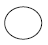
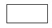
- ㆍ
(정답률: 알수없음)
19. 인터프리터 언어에 해당하는 것은?
- FORTRAN
- ALGOL
- Ada
- BASIC
(정답률: 알수없음)
20. 이산적인 입력과 출력에 유한 수의 내부상태를 가진 시스템의 수학적 모델을 무엇이라 하는가?
- 유한 오토마타
- 정규문법
- 정규언어
- 컴파일러
(정답률: 알수없음)
2과목: 전자계산기구조
21. 레지스터의 기본 회로는?
- 증폭기
- 플립플롭
- 변조기
- 발진기
(정답률: 알수없음)
22. 논리적 연산에 사용되는 연산자가 아닌 것은?
- AND
- Shift
- NOT
- OR
(정답률: 알수없음)
23. 서브루틴과 연관되어 사용되는 명령은?
- Shift
- Call과 Return
- Skip과 Jump
- Increment와 Decrement
(정답률: 알수없음)
24. 캐시 메모리 시스템에서 주기억장치에 있는 블록을 캐시의 슬롯에 대응시키는 방법이 아닌 것은?
- segment mapping
- direct mapping
- associative mapping
- set-associative mapping
(정답률: 알수없음)
25. 음수를 2의 보수로 표현할 때, 8비트로 나타낼 수 있는 정수의 범위는?
- -27+27
- -28+28
- -27+27-1
- -27-1+27
(정답률: 알수없음)
26. 다음 회로와 진리표를 갖는 가산기의 명칭은?
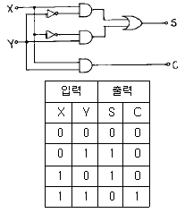
- Full Adder
- Half Adder
- Full Multiplexer
- Half Multiplexer
(정답률: 알수없음)
27. 그림과 같이 병렬가산기의 입력에 데이터를 인가하였을 때 이 회로의 출력 F는 어떻게 되겠는가?
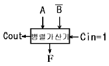
- 가산
- A를 전송
- A를 1증가
- 감산
(정답률: 알수없음)
28. 마이크로 동작의 시퀀스를 결정하여 주는 신호는?
- 사이클 신호
- 누산기
- 레지스터
- 제어 신호
(정답률: 알수없음)
29. 소프트웨어적인 인터럽트 요구 장치 판별법은?
- 벡터 인터럽트
- 폴링
- 스택
- 핸드쉐이킹
(정답률: 알수없음)
30. 컴퓨터 주기억장치의 용량이 256MB라면 주소 버스는 최소한 몇 bit이어야 하는가?
- 24bit
- 26bit
- 28bit
- 30bit
(정답률: 알수없음)
31. 기억 소자로서 표준 플립플롭을 사용하는 것을 무엇이라 하는가?
- dynamic RAM(DRAM)
- static RAM(SRAM)
- PROM
- EPROM
(정답률: 알수없음)
32. 마이크로 연산에 속하지 않는 것은?
- 산술 마이크로 연산
- 논리 마이크로 연산
- 전송 마이크로 연산
- 불 마이크로 연산
(정답률: 알수없음)
33. 광학식 문자 판독 장치를 무엇이라 하는가?
- OCR
- OMR
- MICR
- X-Y Plotter
(정답률: 알수없음)
34. 인터럽트 벡터에 필수적인 것은?
- 분기번지
- 메모리
- 제어규칙
- Acc
(정답률: 알수없음)
35. 여러개의 CPU를 가지고 동시에 많은 일을 처리하는 것은?
- Multi Accessing
- Multi Processing
- Multi Tasking
- Multi Programming
(정답률: 알수없음)
36. 중앙처리장치의 정보를 기억장치에 기억시키는 것을 무엇이라고 하는가?
- LOAD
- STORE
- TRANCE
- BRANCH
(정답률: 알수없음)
37. JK 플립플롭의 트리거 입력과 상태 전환 조건을 설명한 것 중 옳지 않은 것은?
- J=0, K=0 때는 반전치 않는다.
- J=0, K=1 일 때 0으로 되돌아간다.
- J=1, K=0 때는 1로 된다.
- J=1, K=0 때는 반전된다.
(정답률: 알수없음)
38. 데이터가 오직 list에 첨가되는 순서로만 처리되는 것을 무엇이라 하는가?
- 스택
- 큐
- 데크
- 링크
(정답률: 알수없음)
39. 곱셉과 나눗셈에 보조적으로 이용되거나 그 자체로써 특수한 곱셈과 나눗셈을 수행하는 연산은?
- 산술적 Shift
- 로테이트
- 논리적 Shift
- ADD
(정답률: 알수없음)
40. 그림과 같이 인스트럭션 형식(Instruction Formate)이 되어 있다면 연산자(Operation Code)는 몇 가지의 인스트럭션을 표현할 수 있는가?
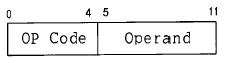
- 4
- 8
- 16
- 32
(정답률: 알수없음)
3과목: 마이크로전자계산기
41. 마이크로컴퓨터에서 명령을 해독하는 부분은?
- 제어부(control)
- 기억부(memory)
- 연산부(ALU)
- 입曺출력부(I/O)
(정답률: 알수없음)
42. 서브루틴(subroutine) 분기시 저장(save)되는 내용이 아닌 것은?
- 프로그램 카운터의 내용
- CPU 레지스터의 내용
- 스택 메모리의 내용
- 상태 조건의 내용
(정답률: 알수없음)
43. CPU에서 BCD 연산을 행하기 위하여 반드시 필요한 플래그(flag)는?
- 사인 플래그(sign flag)
- 제로 플래그(zero flag)
- 캐리 플래그(carry flag)
- 하프 캐리 플래그(half carry flag)
(정답률: 알수없음)
44. A는 프로그램 작성 중 0으로 나누는 오류를 범하여 실행도중 오류 메시지를 받았다.이것은 어떤 인터럽트에 의한 결과인가?
- 외부 인터럽트
- CPU간 인터럽트
- CPU 내부 인터럽트
- 소프트웨어 인터럽트
(정답률: 알수없음)
45. 어떤 RAM이 8 비트로 된 주소 버스와 4비트로된 입ㆍ출력자료 버스를 가지고 있다면 이 RAM의 용량은?
- 512 비트
- 1024 비트
- 2048 비트
- 4096 비트
(정답률: 알수없음)
46. CPU 내부에 있는 ALU의 기능으로 옳은 것은?
- 데이터를 일시 보관한다.
- 명령어를 해독, 번역한다.
- 산술 논리 연산을 행한다.
- 각 레지스터의 제어를 행한다.
(정답률: 알수없음)
47. CPU가 I/O 장치와 직접 연결되는 일을 중간에서 대행하는 것은?
- 입ㆍ출력 케이블
- 입ㆍ출력 채널
- 입ㆍ출력 포트
- 입ㆍ출력 버스
(정답률: 알수없음)
48. 다음 기억장치 중에서 리플레시(refresh)가 필요한 것은?
- static memory(SRAM)
- dynamic memory(DRAM)
- volatile memory
- non-volatile memory
(정답률: 알수없음)
49. 인터럽트 발생 요인이 아닌 것은?
- 정전
- 서브루틴 콜
- 입ㆍ출력
- 에러(error)의 발생
(정답률: 알수없음)
50. 입ㆍ출력 장치들로 부터 인터럽트가 요구되면 CPU는 주변장치를 순차적으로 점검하여 인터럽트를 요구한 입ㆍ출력 장치를 찾아내는 방식은?
- 벡터 인터럽트(Vector Interrupt)
- 폴링 인터럽트(polling Interrupt)
- 우선순위 인터럽트(priority Interrupt)
- 데이지 체인 인터럽트(Daisy chain Interrupt)
(정답률: 알수없음)
51. 다음은 마이크로프로그램의 프로그래밍 기법을 나타낸 것이다. 이에 해당하지 않는 것은?
- 제어이동과 분기
- 반복처리
- 서브루틴의 사용
- 문서화 처리
(정답률: 알수없음)
52. CPU가 현재 수행 중인 프로그램의 실행을 중단하고, 입ㆍ출력기기와의 데이터 전송을 수행한 다음, 다시 원래의 상태로 복귀하는 입ㆍ출력 제어 방식은?
- DMA 제어방식
- 프로그램 제어방식
- 프로토콜 제어방식
- 인터럽트 제어방식
(정답률: 알수없음)
53. 입ㆍ출력 제어와 관계없는 것은?
- DMA
- HDLC
- 인터럽트
- 프로그램 제어
(정답률: 알수없음)
54. 그림과 같은 3상태 버퍼(Tri-state Buffer)회로에서 입력 X가 Low 상태이고, 제어선 C가 Low 상태일 때 출력 Y는 어떤 상태인가?
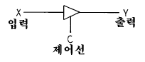
- Low 상태
- high Impedance 상태
- high 상태
- Low Impedance 상태
(정답률: 알수없음)
55. 문자열(string) 이란?
- 일종의 서보형 함수 발생기이다.
- 가산기 연산기를 구성하는 회로의 구성 소자이다.
- 메모리를 지정하여 인출해 내기 위한 메모리 컨트롤 소자이다.
- 하나의 자료를 구성하기 위하여 일련의 문자들로 구성된 정보이다.
(정답률: 알수없음)
56. 가상기억장치(virtual memory)의 설명 중 옳지않은 것은?
- 데이터를 미리 주기억 장치에 넣는다.
- 컴퓨터 속도를 개선하기 위해 사용한다.
- 하드웨어가 아니라 소프트웨어로 실현된다.
- 주기억장치와 보조기억장치가 계층 구조를 이룬다.
(정답률: 알수없음)
57. 고 신뢰성을 위한 메모리 소자를 선택하는 요소로 가장 중요하지 않은 것은?
- 소자의 크기
- 칩당 메모리 용량
- 동작속도
- 소비전력
(정답률: 알수없음)
58. 스택 포인터(stack pointer)란?
- 일시적인 기억을 저장하여 놓은 것이다.
- 어떤 지시를 시험(test)하기 위하여 사용된다.
- 프로그램을 제어(control)하기 위하여 사용된다.
- 특수한 방식으로 사용되는 메모리 데이터 영역의 주소를 포함하고 있는 레지스터이다.
(정답률: 알수없음)
59. 한 컴퓨터가 다른 컴퓨터처럼 똑같이 동작하도록, 소프트웨어나 마이크로프로그램을 사용하는 기법은?
- Loader
- Emulator
- Compiler
- Editor
(정답률: 알수없음)
60. 마이크로컴퓨터의 CPU를 구성하는 장치 중 관계가 가장 먼 것은?
- 연산장치
- 레지스터
- 제어장치
- 기억장치
(정답률: 알수없음)
4과목: 논리회로
61. 다음 소자 중 스위칭 속도가 가장 빠른 것은?
- CMOS
- RTL
- TTL
- ECL
(정답률: 알수없음)
62. 다음 ( )안에 알맞는 말은?
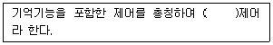
- 순서
- 조합
- 논리
- 플립플롭
(정답률: 알수없음)
63. De Morgan의 정리를 나타낸 논리식은?
- A(B+C)=AB+AC
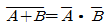
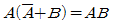
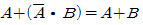
(정답률: 알수없음)
64. 그림에서 회로와 등가가 성립되지 않는 것은?
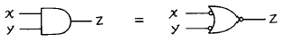
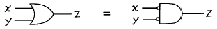
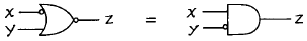
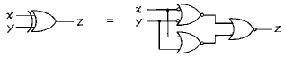
(정답률: 알수없음)
65. 조합논리회로에 해당되지 않는 것은?
- 비교 회로
- 다수결 회로
- 계수 회로
- 패리티 체크 회로
(정답률: 알수없음)
66. R-S 플립플롭을 이용하여 다음과 같이 연결 하였을 때 기능상 어느 플립플롭과 같은가?
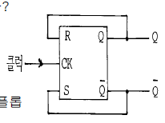
- J-K 플립플롭
- T 플립플롭
- D 플립플롭
- 마스터-슬리브형 J-K 플립플롭
(정답률: 알수없음)
67. 다음 회로가 수행할 수 있는 논리 기능은?
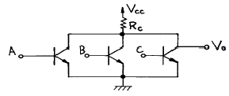
- NOT
- NOR
- AND
- OR
(정답률: 알수없음)
68. 다음은 존슨 카운터의 정상순서이다. 빈칸의 2진수는?
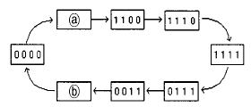
- ⓐ1111, ⓑ1111
- ⓐ0001, ⓑ0001
- ⓐ1000, ⓑ1000
- ⓐ1000, ⓑ0001
(정답률: 알수없음)
69. 다음 불대수의 관계식이 옳지 않은 것은?
- Xㆍ(Y+Z) = XㆍY + XㆍZ
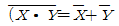
- XㆍX = 1
- X+X = X
(정답률: 알수없음)
70. 한 플립플롭의 출력이 다른 플립플롭을 구동시키는 계수기는?
- 링 계수기
- 존슨 계수기
- 10진 계수기
- 리플 계수기
(정답률: 알수없음)
71. 다음 중에서 논리 함수의 결과가 다른 하나는?
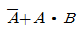
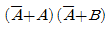
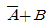
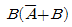
(정답률: 알수없음)
72. 다음회로에서 A=1, B=0일 때 출력 X, Y의 값으로 옳은 것은?
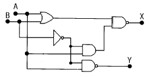
- X=1, Y=1
- X=1, Y=0
- X=0, Y=1
- X=0, Y=0
(정답률: 알수없음)
73. BCD 코드(8421 Code)에서 사용하지 않는 조합은?
- 0 0 0 0
- 1 0 0 1
- 1 0 1 1
- 0 1 1 0
(정답률: 알수없음)
74. RS 플립플롭의 동작 설명 중 옳지 않은 것은?
- S=0, R=0 입력일 때 불변 상태가 된다.
- S=0, R=1 입력일 때 리셋 상태가 된다.
- S=1, R=0 입력일 때 세트 상태가 된다.
- S=1, R=1 입력일 때 토글 상태가 된다.
(정답률: 알수없음)
75. N개의 입력 데이터(data) 중에서 하나를 선택하여 그 데이터를 단일 정보 채널로 전송하는 것은?
- 인코더
- 디코더
- 멀티플렉서
- 디멀티플렉서
(정답률: 알수없음)
76. J-K 플립플롭의 특성 방정식으로 옳게 표현한 것은?
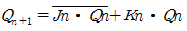
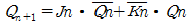
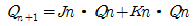
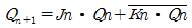
(정답률: 알수없음)
77. 12비트 2진 입력 D/A 변환기의 분해능은?
- 1/212
- 1/26
- 1/23
- 1/2
(정답률: 알수없음)
78. 다음 회로의 기능은?
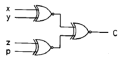
- 4비트 가산기
- 4비트 크기 비교기
- 4비트 홀수 패리티체커(CHECKER)
- 4비트 짝수 패리티체커(CHECKER)
(정답률: 알수없음)
79. 멀티플렉서 64개의 입력을 제어하기 위해 몇 개의 선택선이 필요한가?
- 4
- 6
- 16
- 32
(정답률: 알수없음)
80. 순서논리회로를 설계하려 할 때 그 순서가 옳은 것은?
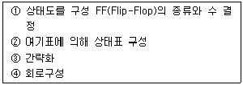
- ②-③-④-①
- ①-②-③-④
- ①-④-②-③
- ④-③-②-①
(정답률: 알수없음)
5과목: 정보통신개론
81. 다음 중 ISDN(Intergrated Service Digital Network)에 관한 설명으로 옳지 않은 것은?
- 음성, 화상, 데이터 등을 별개의 통신망으로 서비스 되고 있는 것을 하나의 디지털 통신망에 통합처리하려는 목적에서 발전되고 있다.
- 기존의 회선교환망이나 패킷교환망도 이용 가능하다.
- 서비스기능은 하위계층인 베어러서비스와 상위계층인 텔레서비스를 모두 포함한다.
- 공중전기통신망인 PSTN과 PSDN에서 제공하는 통신서비스는 제외한다.
(정답률: 알수없음)
82. 다음 중 LAN의 전송매체로 전송특성이 가장 좋은 것은?
- 동축 케이블
- UTP 쌍연 케이블
- 광 케이블
- 폼스킨 케이블
(정답률: 알수없음)
83. 데이터전송시스템에서의 통신방식의 종류가 아닌 것은?
- 단방향 통신방식
- 반이중 통신방식
- 복이중 통신방식
- 전이중 통신방식
(정답률: 알수없음)
84. 정보의 특성을 설명한 것 중 거리가 먼 것은?
- 정보는 가공되지 않은 데이터로부터 얻어진다.
- 정보는 일정한 시간이 흐르면 효력이 감소한다.
- 연속적인 정보활동과 축적으로 정보가치가 줄어든다.
- 정보는 사람에 따라 중요도가 달라질 수 있다.
(정답률: 알수없음)
85. 정보통신 시스템의 특징에 대한 설명 중 틀린 것은?
- 통신회선을 효율적으로 이용 가능함
- 고성능의 에러제어 방식을 사용하여 시스템 신뢰도가 높음
- 협대역 전송에만 주로 사용함
- 고품질의 통신서비스를 제공함
(정답률: 알수없음)
86. 비동기식(asynchronous) 데이터전송방식에 관한 설명으로 적당하지 않은 것은?
- 저속도의 전송에 주로 이용된다.
- 문자의 앞쪽에 Start bit가 위치한다.
- 문자의 뒤쪽에 1-2개의 Stop bit를 갖는다.
- 캐릭터와 캐릭터 사이에 휴지시간이 없다.
(정답률: 알수없음)
87. 시작 비트 1개, 정지 비트 1개, 패리티 비트 1개를 포함하는 아스키(ASCII)코드를 1200[bps]의 전송속도로 보낼 때 1초에 전송되는 문자수는?
- 109
- 120
- 133
- 150
(정답률: 알수없음)
88. 정보센터로부터 필요한 정보를 선택하여 공중전화망을 통해 일반 TV로 수신 가능한 뉴미디어는?
- 텔리텍스
- 전자우편
- 비디오텍스
- 원격전자회의
(정답률: 알수없음)
89. 다음 중 정보를 정확하게 전송하기 위한 통신 프로토콜의 기능과 거리가 먼 것은?
- 다중화
- 에러 제어
- 동기화
- 흐름 제어
(정답률: 알수없음)
90. 통신망(network)을 구축하여 얻을 수 있는 장점이 아닌 것은?
- 하드웨어 및 소프트웨어 자원의 공용화
- 배치(batch)처리 및 보안성 유지 간편
- 부하의 분산 및 효율성 향상
- 데이터베이스 공용 및 시차의 활용
(정답률: 알수없음)
91. 멀티미디어의 표준화와 관련하여 MPEG란 다음 중 무엇을 의미하는가?
- 음성 압축표준
- 팩시밀리 압축표준
- 동화상 압축표준
- 문자 메시지 압축표준
(정답률: 알수없음)
92. 고속데이터 전송에 이용되며, 주로 9600[bps]의 속도에서 운용되는 변조방식은?
- ASK(진폭편이변조)
- FSK(주파수편이변조)
- APK(진폭위상변조)
- QAM(직교진폭변조)
(정답률: 알수없음)
93. 다음 중 컴퓨터 네트워크에서 논리구조를 구성하는 기본 요소로서 거리가 먼 것은?
- 사용자 프로세스(user process)
- 케이블(cable)
- 노드(node)
- 링크(link)
(정답률: 알수없음)
94. ISDN 채널에서 D채널의 용도는?
- 음성채널
- 사용자 서비스를 위한 채널
- 서비스 제어를 위한 채널과 저속의 패킷전송 채널
- 예비채널
(정답률: 알수없음)
95. LAN(Local Area Network)의 설명이 잘못된 것은?
- 광대역 전송매체의 사용으로 고속통신이 가능하다.
- 네트워크내의 접속 기기간에 전송이 가능하다.
- 최단거리 경로선택이 필요하다.
- 확장성과 재배치성이 좋다.
(정답률: 알수없음)
96. 통신규약(protocol)의 설명으로 가장 적합한 것은?
- 통신용 하드웨어 구성에 대한 표준
- 네트워크 시스템(Network System)에 대한 운용지침
- 정보통신매체(Communication channel)에 대한 표준
- 통신을 제어하기 위한 표준적인 규칙과 절차의 집합
(정답률: 알수없음)
97. 모뎀(MODEM)의 주요 기능은?
- 디지털 신호를 아날로그 신호로 변환시킨다.
- 데이터 전송속도를 변환시킨다.
- 디지털 신호를 디지털 데이터로 변환시킨다.
- 아날로그 신호를 아날로그 데이터로 변환시킨다.
(정답률: 알수없음)
98. ITU-T 권고 시리즈의 의미가 잘못 설명된 것은?
- I시리즈 : ISDN의 표준화
- X시리즈 : 사설 데이터망을 통한 데이터 전송
- V시리즈 : 공중전화망을 통한 데이터 전송
- T시리즈 : 텔레마틱 단말에 관련된 권고
(정답률: 알수없음)
99. 다음 중 LAN의 기본적인 회선망 형태가 아닌 것은?
- 스타형
- 버스형
- 베이스밴드형
- 링형
(정답률: 알수없음)
100. 데이터 단말장치와 데이터 회선종단장치의 전기적,기계적 인터페이스는?
- ADSL
- DSU
- SERVER
- RS-232C
(정답률: 알수없음)